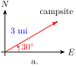
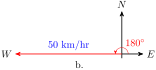

Example 9.1.
Draw an arrow to represent each vector.
-
The campsite is 3 miles away, in a direction \(30\degree\) north of east.
-
The wind is blowing due west at 50 kilometers per hour.
Solution.
-
We draw an arrow making an angle of \(30\degree\) from east. The length of the arrow is 3 units, representing 3 miles. See figure (a) below.


-
We draw an arrow pointing due west, that is, making an angle of \(180\degree\) from east. The length of the arrow represents the speed of the wind, 50 kilometers per hour. See figure (b) above.
![Runestone Academy logo]()
![MathJax logo]()